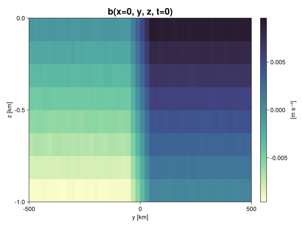
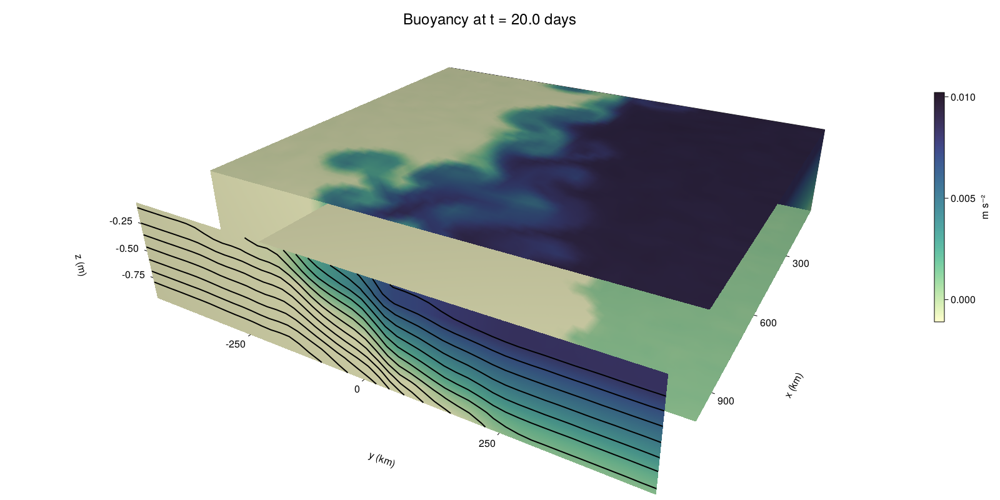

Baroclinic adjustment
In this example, we simulate the evolution and equilibration of a baroclinically unstable front.
Install dependencies
First let's make sure we have all required packages installed.
using Pkg
pkg"add Oceananigans, CairoMakie"using Oceananigans
using Oceananigans.UnitsGrid
We use a three-dimensional channel that is periodic in the x direction:
Lx = 1000kilometers # east-west extent [m]
Ly = 1000kilometers # north-south extent [m]
Lz = 1kilometers # depth [m]
grid = RectilinearGrid(size = (48, 48, 8),
x = (0, Lx),
y = (-Ly/2, Ly/2),
z = (-Lz, 0),
topology = (Periodic, Bounded, Bounded))48×48×8 RectilinearGrid{Float64, Periodic, Bounded, Bounded} on CPU with 3×3×3 halo
├── Periodic x ∈ [0.0, 1.0e6) regularly spaced with Δx=20833.3
├── Bounded y ∈ [-500000.0, 500000.0] regularly spaced with Δy=20833.3
└── Bounded z ∈ [-1000.0, 0.0] regularly spaced with Δz=125.0Model
We built a HydrostaticFreeSurfaceModel with an ImplicitFreeSurface solver. Regarding Coriolis, we use a beta-plane centered at 45° South.
model = HydrostaticFreeSurfaceModel(; grid,
coriolis = BetaPlane(latitude = -45),
buoyancy = BuoyancyTracer(),
tracers = :b,
momentum_advection = WENO(),
tracer_advection = WENO())HydrostaticFreeSurfaceModel{CPU, RectilinearGrid}(time = 0 seconds, iteration = 0)
├── grid: 48×48×8 RectilinearGrid{Float64, Periodic, Bounded, Bounded} on CPU with 3×3×3 halo
├── timestepper: QuasiAdamsBashforth2TimeStepper
├── tracers: b
├── closure: Nothing
├── buoyancy: BuoyancyTracer with ĝ = NegativeZDirection()
├── free surface: ImplicitFreeSurface with gravitational acceleration 9.80665 m s⁻²
│ └── solver: FFTImplicitFreeSurfaceSolver
└── coriolis: BetaPlane{Float64}We start our simulation from rest with a baroclinically unstable buoyancy distribution. We use ramp(y, Δy), defined below, to specify a front with width Δy and horizontal buoyancy gradient M². We impose the front on top of a vertical buoyancy gradient N² and a bit of noise.
"""
ramp(y, Δy)
Linear ramp from 0 to 1 between -Δy/2 and +Δy/2.
For example:
```
y < -Δy/2 => ramp = 0
-Δy/2 < y < -Δy/2 => ramp = y / Δy
y > Δy/2 => ramp = 1
```
"""
ramp(y, Δy) = min(max(0, y/Δy + 1/2), 1)
N² = 1e-5 # [s⁻²] buoyancy frequency / stratification
M² = 1e-7 # [s⁻²] horizontal buoyancy gradient
Δy = 100kilometers # width of the region of the front
Δb = Δy * M² # buoyancy jump associated with the front
ϵb = 1e-2 * Δb # noise amplitude
bᵢ(x, y, z) = N² * z + Δb * ramp(y, Δy) + ϵb * randn()
set!(model, b=bᵢ)Let's visualize the initial buoyancy distribution.
using CairoMakie
# Build coordinates with units of kilometers
x, y, z = 1e-3 .* nodes(grid, (Center(), Center(), Center()))
b = model.tracers.b
fig, ax, hm = heatmap(y, z, interior(b)[1, :, :],
colormap=:deep,
axis = (xlabel = "y [km]",
ylabel = "z [km]",
title = "b(x=0, y, z, t=0)",
titlesize = 24))
Colorbar(fig[1, 2], hm, label = "[m s⁻²]")
fig
Simulation
Now let's build a Simulation.
simulation = Simulation(model, Δt=20minutes, stop_time=20days)Simulation of HydrostaticFreeSurfaceModel{CPU, RectilinearGrid}(time = 0 seconds, iteration = 0)
├── Next time step: 20 minutes
├── Elapsed wall time: 0 seconds
├── Wall time per iteration: NaN days
├── Stop time: 20 days
├── Stop iteration : Inf
├── Wall time limit: Inf
├── Callbacks: OrderedDict with 4 entries:
│ ├── stop_time_exceeded => Callback of stop_time_exceeded on IterationInterval(1)
│ ├── stop_iteration_exceeded => Callback of stop_iteration_exceeded on IterationInterval(1)
│ ├── wall_time_limit_exceeded => Callback of wall_time_limit_exceeded on IterationInterval(1)
│ └── nan_checker => Callback of NaNChecker for u on IterationInterval(100)
├── Output writers: OrderedDict with no entries
└── Diagnostics: OrderedDict with no entriesWe add a TimeStepWizard callback to adapt the simulation's time-step,
wizard = TimeStepWizard(cfl=0.2, max_change=1.1, max_Δt=20minutes)
simulation.callbacks[:wizard] = Callback(wizard, IterationInterval(20))Callback of TimeStepWizard(cfl=0.2, max_Δt=1200.0, min_Δt=0.0) on IterationInterval(20)Also, we add a callback to print a message about how the simulation is going,
using Printf
wall_clock = Ref(time_ns())
function print_progress(sim)
u, v, w = model.velocities
progress = 100 * (time(sim) / sim.stop_time)
elapsed = (time_ns() - wall_clock[]) / 1e9
@printf("[%05.2f%%] i: %d, t: %s, wall time: %s, max(u): (%6.3e, %6.3e, %6.3e) m/s, next Δt: %s\n",
progress, iteration(sim), prettytime(sim), prettytime(elapsed),
maximum(abs, u), maximum(abs, v), maximum(abs, w), prettytime(sim.Δt))
wall_clock[] = time_ns()
return nothing
end
simulation.callbacks[:print_progress] = Callback(print_progress, IterationInterval(100))Callback of print_progress on IterationInterval(100)Diagnostics/Output
Here, we save the buoyancy, $b$, at the edges of our domain as well as the zonal ($x$) average of buoyancy.
u, v, w = model.velocities
ζ = ∂x(v) - ∂y(u)
B = Average(b, dims=1)
U = Average(u, dims=1)
V = Average(v, dims=1)
filename = "baroclinic_adjustment"
save_fields_interval = 0.5day
slicers = (east = (grid.Nx, :, :),
north = (:, grid.Ny, :),
bottom = (:, :, 1),
top = (:, :, grid.Nz))
for side in keys(slicers)
indices = slicers[side]
simulation.output_writers[side] = JLD2OutputWriter(model, (; b, ζ);
filename = filename * "_$(side)_slice",
schedule = TimeInterval(save_fields_interval),
overwrite_existing = true,
indices)
end
simulation.output_writers[:zonal] = JLD2OutputWriter(model, (; b=B, u=U, v=V);
filename = filename * "_zonal_average",
schedule = TimeInterval(save_fields_interval),
overwrite_existing = true)JLD2OutputWriter scheduled on TimeInterval(12 hours):
├── filepath: ./baroclinic_adjustment_zonal_average.jld2
├── 3 outputs: (b, u, v)
├── array type: Array{Float64}
├── including: [:grid, :coriolis, :buoyancy, :closure]
└── max filesize: Inf YiBNow we're ready to run.
@info "Running the simulation..."
run!(simulation)
@info "Simulation completed in " * prettytime(simulation.run_wall_time)[ Info: Running the simulation...
[ Info: Initializing simulation...
[00.00%] i: 0, t: 0 seconds, wall time: 31.945 seconds, max(u): (0.000e+00, 0.000e+00, 0.000e+00) m/s, next Δt: 20 minutes
[ Info: ... simulation initialization complete (23.040 seconds)
[ Info: Executing initial time step...
[ Info: ... initial time step complete (21.047 seconds).
[06.94%] i: 100, t: 1.389 days, wall time: 1.041 minutes, max(u): (1.299e-01, 1.270e-01, 1.496e-03) m/s, next Δt: 20 minutes
[13.89%] i: 200, t: 2.778 days, wall time: 22.715 seconds, max(u): (2.156e-01, 1.896e-01, 1.851e-03) m/s, next Δt: 20 minutes
[20.83%] i: 300, t: 4.167 days, wall time: 22.621 seconds, max(u): (2.728e-01, 2.454e-01, 1.745e-03) m/s, next Δt: 20 minutes
[27.78%] i: 400, t: 5.556 days, wall time: 22.749 seconds, max(u): (3.439e-01, 3.245e-01, 1.820e-03) m/s, next Δt: 20 minutes
[34.72%] i: 500, t: 6.944 days, wall time: 22.644 seconds, max(u): (4.222e-01, 4.700e-01, 2.011e-03) m/s, next Δt: 20 minutes
[41.67%] i: 600, t: 8.333 days, wall time: 22.410 seconds, max(u): (5.315e-01, 7.072e-01, 2.412e-03) m/s, next Δt: 20 minutes
[48.61%] i: 700, t: 9.722 days, wall time: 22.504 seconds, max(u): (7.117e-01, 1.042e+00, 3.336e-03) m/s, next Δt: 20 minutes
[55.56%] i: 800, t: 11.111 days, wall time: 22.773 seconds, max(u): (1.076e+00, 1.215e+00, 3.945e-03) m/s, next Δt: 20 minutes
[62.50%] i: 900, t: 12.500 days, wall time: 22.487 seconds, max(u): (1.394e+00, 1.283e+00, 4.968e-03) m/s, next Δt: 20 minutes
[69.44%] i: 1000, t: 13.889 days, wall time: 22.567 seconds, max(u): (1.501e+00, 1.413e+00, 3.947e-03) m/s, next Δt: 20 minutes
[76.39%] i: 1100, t: 15.278 days, wall time: 22.641 seconds, max(u): (1.439e+00, 1.220e+00, 4.869e-03) m/s, next Δt: 20 minutes
[83.33%] i: 1200, t: 16.667 days, wall time: 22.617 seconds, max(u): (1.389e+00, 1.338e+00, 3.189e-03) m/s, next Δt: 20 minutes
[90.28%] i: 1300, t: 18.056 days, wall time: 22.692 seconds, max(u): (1.392e+00, 1.273e+00, 4.060e-03) m/s, next Δt: 20 minutes
[97.22%] i: 1400, t: 19.444 days, wall time: 22.465 seconds, max(u): (1.475e+00, 1.296e+00, 2.774e-03) m/s, next Δt: 20 minutes
[ Info: Simulation is stopping after running for 6.238 minutes.
[ Info: Simulation time 20 days equals or exceeds stop time 20 days.
[ Info: Simulation completed in 6.244 minutes
Visualization
All that's left is to make a pretty movie. Actually, we make two visualizations here. First, we illustrate how to make a 3D visualization with Makie's Axis3 and Makie.surface. Then we make a movie in 2D. We use CairoMakie in this example, but note that using GLMakie is more convenient on a system with OpenGL, as figures will be displayed on the screen.
using CairoMakieThree-dimensional visualization
We load the saved buoyancy output on the top, bottom, north, and east surface as FieldTimeSerieses.
filename = "baroclinic_adjustment"
sides = keys(slicers)
slice_filenames = NamedTuple(side => filename * "_$(side)_slice.jld2" for side in sides)
b_timeserieses = (east = FieldTimeSeries(slice_filenames.east, "b"),
north = FieldTimeSeries(slice_filenames.north, "b"),
bottom = FieldTimeSeries(slice_filenames.bottom, "b"),
top = FieldTimeSeries(slice_filenames.top, "b"))
B_timeseries = FieldTimeSeries(filename * "_zonal_average.jld2", "b")
times = B_timeseries.times
grid = B_timeseries.grid48×48×8 RectilinearGrid{Float64, Periodic, Bounded, Bounded} on CPU with 3×3×3 halo
├── Periodic x ∈ [0.0, 1.0e6) regularly spaced with Δx=20833.3
├── Bounded y ∈ [-500000.0, 500000.0] regularly spaced with Δy=20833.3
└── Bounded z ∈ [-1000.0, 0.0] regularly spaced with Δz=125.0We build the coordinates. We rescale horizontal coordinates to kilometers.
xb, yb, zb = nodes(b_timeserieses.east)
xb = xb ./ 1e3 # convert m -> km
yb = yb ./ 1e3 # convert m -> km
Nx, Ny, Nz = size(grid)
x_xz = repeat(x, 1, Nz)
y_xz_north = y[end] * ones(Nx, Nz)
z_xz = repeat(reshape(z, 1, Nz), Nx, 1)
x_yz_east = x[end] * ones(Ny, Nz)
y_yz = repeat(y, 1, Nz)
z_yz = repeat(reshape(z, 1, Nz), grid.Ny, 1)
x_xy = x
y_xy = y
z_xy_top = z[end] * ones(grid.Nx, grid.Ny)
z_xy_bottom = z[1] * ones(grid.Nx, grid.Ny)Then we create a 3D axis. We use zonal_slice_displacement to control where the plot of the instantaneous zonal average flow is located.
fig = Figure(resolution = (1600, 800))
zonal_slice_displacement = 1.2
ax = Axis3(fig[2, 1],
aspect=(1, 1, 1/5),
xlabel = "x (km)",
ylabel = "y (km)",
zlabel = "z (m)",
xlabeloffset = 100,
ylabeloffset = 100,
zlabeloffset = 100,
limits = ((x[1], zonal_slice_displacement * x[end]), (y[1], y[end]), (z[1], z[end])),
elevation = 0.45,
azimuth = 6.8,
xspinesvisible = false,
zgridvisible = false,
protrusions = 40,
perspectiveness = 0.7)Axis3()We use data from the final savepoint for the 3D plot. Note that this plot can easily be animated by using Makie's Observable. To dive into Observables, check out Makie.jl's Documentation.
n = length(times)41Now let's make a 3D plot of the buoyancy and in front of it we'll use the zonally-averaged output to plot the instantaneous zonal-average of the buoyancy.
b_slices = (east = interior(b_timeserieses.east[n], 1, :, :),
north = interior(b_timeserieses.north[n], :, 1, :),
bottom = interior(b_timeserieses.bottom[n], :, :, 1),
top = interior(b_timeserieses.top[n], :, :, 1))
# Zonally-averaged buoyancy
B = interior(B_timeseries[n], 1, :, :)
clims = 1.1 .* extrema(b_timeserieses.top[n][:])
kwargs = (colorrange=clims, colormap=:deep)
surface!(ax, x_yz_east, y_yz, z_yz; color = b_slices.east, kwargs...)
surface!(ax, x_xz, y_xz_north, z_xz; color = b_slices.north, kwargs...)
surface!(ax, x_xy, y_xy, z_xy_bottom ; color = b_slices.bottom, kwargs...)
surface!(ax, x_xy, y_xy, z_xy_top; color = b_slices.top, kwargs...)
sf = surface!(ax, zonal_slice_displacement .* x_yz_east, y_yz, z_yz; color = B, kwargs...)
contour!(ax, y, z, B; transformation = (:yz, zonal_slice_displacement * x[end]),
levels = 15, linewidth = 2, color = :black)
Colorbar(fig[2, 2], sf, label = "m s⁻²", height = Relative(0.4), tellheight=false)
title = "Buoyancy at t = " * string(round(times[n] / day, digits=1)) * " days"
fig[1, 1:2] = Label(fig, title; fontsize = 24, tellwidth = false, padding = (0, 0, -120, 0))
rowgap!(fig.layout, 1, Relative(-0.2))
colgap!(fig.layout, 1, Relative(-0.1))
save("baroclinic_adjustment_3d.png", fig)
Two-dimensional movie
We make a 2D movie that shows buoyancy $b$ and vertical vorticity $ζ$ at the surface, as well as the zonally-averaged zonal and meridional velocities $U$ and $V$ in the $(y, z)$ plane. First we load the FieldTimeSeries and extract the additional coordinates we'll need for plotting
ζ_timeseries = FieldTimeSeries(slice_filenames.top, "ζ")
U_timeseries = FieldTimeSeries(filename * "_zonal_average.jld2", "u")
B_timeseries = FieldTimeSeries(filename * "_zonal_average.jld2", "b")
V_timeseries = FieldTimeSeries(filename * "_zonal_average.jld2", "v")
xζ, yζ, zζ = nodes(ζ_timeseries)
yv = ynodes(V_timeseries)
xζ = xζ ./ 1e3 # convert m -> km
yζ = yζ ./ 1e3 # convert m -> km
yv = yv ./ 1e3 # convert m -> km49-element Vector{Float64}:
-500.0
-479.1666666666667
-458.3333333333333
-437.5
-416.6666666666667
-395.8333333333333
-375.0
-354.1666666666667
-333.3333333333333
-312.5
-291.6666666666667
-270.8333333333333
-250.0
-229.16666666666666
-208.33333333333334
-187.5
-166.66666666666666
-145.83333333333334
-125.0
-104.16666666666667
-83.33333333333333
-62.5
-41.666666666666664
-20.833333333333332
0.0
20.833333333333332
41.666666666666664
62.5
83.33333333333333
104.16666666666667
125.0
145.83333333333334
166.66666666666666
187.5
208.33333333333334
229.16666666666666
250.0
270.8333333333333
291.6666666666667
312.5
333.3333333333333
354.1666666666667
375.0
395.8333333333333
416.6666666666667
437.5
458.3333333333333
479.1666666666667
500.0Next, we set up a plot with 4 panels. The top panels are large and square, while the bottom panels get a reduced aspect ratio through rowsize!.
set_theme!(Theme(fontsize=24))
fig = Figure(resolution=(1800, 1000))
axb = Axis(fig[1, 2], xlabel="x (km)", ylabel="y (km)", aspect=1)
axζ = Axis(fig[1, 3], xlabel="x (km)", ylabel="y (km)", aspect=1, yaxisposition=:right)
axu = Axis(fig[2, 2], xlabel="y (km)", ylabel="z (m)")
axv = Axis(fig[2, 3], xlabel="y (km)", ylabel="z (m)", yaxisposition=:right)
rowsize!(fig.layout, 2, Relative(0.3))To prepare a plot for animation, we index the timeseries with an Observable,
n = Observable(1)
b_top = @lift interior(b_timeserieses.top[$n], :, :, 1)
ζ_top = @lift interior(ζ_timeseries[$n], :, :, 1)
U = @lift interior(U_timeseries[$n], 1, :, :)
V = @lift interior(V_timeseries[$n], 1, :, :)
B = @lift interior(B_timeseries[$n], 1, :, :)Observable([-0.009380049778445393 -0.008135884205531156 -0.006870292503884976 -0.005629741955272474 -0.004391178229909666 -0.0031320088887018278 -0.0018855086909646043 -0.0006266914975315745; -0.009370183541932338 -0.008117012767068646 -0.006873750798401743 -0.0056136001678337025 -0.0043540195783163815 -0.0031166658604040716 -0.0018655782888977667 -0.0006121223547025115; -0.009369142039447347 -0.008122265336750263 -0.006878586717596347 -0.005633808868384905 -0.004373519411225664 -0.003134739678310357 -0.001888182329538133 -0.0006302737770078998; -0.00938766564736907 -0.008112393649500301 -0.006851840312439725 -0.005620418374122589 -0.004347733705238092 -0.003118057210899873 -0.0018743682201710452 -0.0006137221492544134; -0.00938272399650401 -0.008121384029806767 -0.006876259369075008 -0.005641529861415783 -0.0043649790960920715 -0.003125829101994181 -0.0019070690000947054 -0.0006198372693488411; -0.009368911846107242 -0.008148790157581059 -0.006842229165415954 -0.0056603118993598656 -0.004384506013230985 -0.003126592704180295 -0.0018612772187130394 -0.000631075553221241; -0.009359324118413207 -0.008103145360253127 -0.006872045993799449 -0.005634847729302151 -0.004375939877883554 -0.003121271874031615 -0.0018943193486987081 -0.000629518776511855; -0.009384007118455941 -0.008123402721969738 -0.006874232619070934 -0.005631473616260965 -0.004359897338049589 -0.0031423197732223847 -0.001888556875905262 -0.0006364016771418488; -0.009382112948896064 -0.008121112530549464 -0.0068657944054496545 -0.005620748367467767 -0.0043857557117741395 -0.0031263026093553627 -0.0018822667267006145 -0.0006425755086519122; -0.009359724530137952 -0.008141769267670892 -0.006887097551605451 -0.005610322938850034 -0.004349086795509092 -0.003117071331398758 -0.001862121554691453 -0.0006384096820278869; -0.009384315252124003 -0.008141506671473318 -0.006894020322550061 -0.005613247790035921 -0.0043763801608158815 -0.0031210212119737197 -0.0018465717633251826 -0.000627330288332757; -0.009351483338751881 -0.008111946372112136 -0.006869835633672325 -0.0056157391837942106 -0.004364110658968281 -0.003132745347966958 -0.0018781726428543598 -0.0006223236797310985; -0.00936469170330723 -0.008137892741335735 -0.006886560810062771 -0.00564904727393898 -0.004382381739916443 -0.003128200182870722 -0.0018713444041432298 -0.0006132801549104557; -0.009395391735473713 -0.00813042246634067 -0.0068996707011778615 -0.005634835145920902 -0.004379385614597179 -0.003133750467194774 -0.0018584832955768355 -0.0005996796673598137; -0.009367805996446243 -0.008122249710416791 -0.006886329011024597 -0.005632125440486233 -0.0043776124101870895 -0.003113180777953801 -0.0019004795235470072 -0.0006269794304859112; -0.00937178314938435 -0.008136627288858451 -0.006884382243838957 -0.005612870961847347 -0.004369141837253301 -0.0031541354160411223 -0.0018768008836431763 -0.0006219799375963244; -0.009364384825016456 -0.008124648660231831 -0.006863922216472726 -0.0056272755933774845 -0.004355246213385616 -0.0031206822812771076 -0.001885210282585113 -0.0006303082776408075; -0.009379521243018222 -0.00813553065943296 -0.006873881083288176 -0.005597278096039095 -0.004385263416595134 -0.0031328226078668805 -0.00188610124307171 -0.0006261035287643908; -0.009382371897309125 -0.008120993878327359 -0.006882518729517982 -0.005581969156111438 -0.004384081081636724 -0.003091877822742539 -0.0018838923802278742 -0.0006198691591389871; -0.009382987147104773 -0.008121274964355905 -0.006879355276206256 -0.005623283795454972 -0.004381120918187253 -0.003140630770333379 -0.001895345359664336 -0.0006436203338488918; -0.009389388360575285 -0.008119643536875687 -0.00686688166451977 -0.005600696610118132 -0.00435335055030378 -0.003124989625227224 -0.0018657821377247195 -0.000613606675295714; -0.009369344482726525 -0.008112376397956124 -0.0068458069849846774 -0.005633352547134041 -0.004376841841182546 -0.003111623103004425 -0.0018803224504428484 -0.0006373249967554474; -0.007481132721704899 -0.006251588632013663 -0.004997603778680196 -0.0037601519019787883 -0.0024989330391090416 -0.0012355241817939824 -1.3383913528206235e-5 0.00123652270055748; -0.005423693045793314 -0.004159665475937479 -0.002928214397614638 -0.0016713731558035047 -0.0004165902401064259 0.0008198791320065468 0.0020925696098293713 0.003352842776941631; -0.0033180712530691495 -0.0020628245504793813 -0.0008410366257976524 0.0004000782043304045 0.0016598370277479254 0.0028982910560553395 0.004176201980442671 0.005421599870438218; -0.001251184449672639 9.045748530734578e-6 0.0012484465653321037 0.0025202405433750025 0.0037482275689439955 0.004984778321222421 0.006285082443275607 0.007527489087037796; 0.0006401514007939535 0.0018826235897024585 0.003104994708117329 0.004392152831994283 0.005639533793035455 0.006872985541623664 0.008126737977592854 0.009369406925454729; 0.0006187155040315419 0.0019033041499692956 0.003110922414197541 0.0043770099200885135 0.005626897506410704 0.006890867347209177 0.008126750718823126 0.00938223012863812; 0.0006205839657162218 0.0018810490651134852 0.00310744641576822 0.00436134456751316 0.005593659752650377 0.006873468226819407 0.008132493310865841 0.009399063262019312; 0.0006289875288896658 0.0018767971207017955 0.0031256041036924263 0.004354136634873694 0.00564451806025867 0.006884525975584991 0.008123464955296606 0.009392165103641175; 0.0006235783700095169 0.0019005874494715145 0.00313801314552125 0.0043628598422169275 0.0056080081761807204 0.006862087128086457 0.008150547298862392 0.009382626560829277; 0.0006328127446212825 0.00188958524636911 0.003105413570211509 0.004373667559237135 0.005616657321131371 0.006873488724396223 0.008108021342068625 0.00936208727959034; 0.0006059386309005006 0.001888501706121332 0.003113455028798116 0.004393561388968007 0.005603149672891599 0.006882009110592869 0.008126696413783566 0.009390110389851774; 0.0006190242138848654 0.001888040714801529 0.0030975433037549686 0.004367055549235302 0.005618051831716982 0.006890773108019344 0.008123269663268578 0.009386296019241349; 0.0006330366074223078 0.0018918313273793346 0.0030989681426738433 0.004364776959137755 0.005629351567672255 0.006868607555126715 0.00809578765956756 0.009374125303075331; 0.0006201948076025181 0.0018756000041476202 0.0030856311200520036 0.004372714361440539 0.00564555600828909 0.006855039368254168 0.008128360772841412 0.009382331783112366; 0.0005959481024694243 0.0018842144451581917 0.003119617319818539 0.004384445575233578 0.005605682055736263 0.006880940969456339 0.008130506842611176 0.009362744163702582; 0.0006338460087216585 0.001877048841173128 0.0031344617256043317 0.004372703911908393 0.005625271426543801 0.006872403809148049 0.008127869669767198 0.009374797823979859; 0.000634210362491983 0.0019216222585584156 0.0031105206426556412 0.004362419980291841 0.005627294255930028 0.006876608409306921 0.008129038852731014 0.009382972452374851; 0.00062138853724767 0.001893369767721845 0.003117049448493658 0.004377054989863939 0.005633579707793827 0.006851216917303306 0.008095324876572295 0.009376830409256581; 0.0006308142017250188 0.0018926051544304998 0.0031182548650392585 0.004350898245401992 0.005622252663906587 0.006861776388415167 0.008122082053916006 0.009389616389457114; 0.000619371451411066 0.0018701406111386206 0.0030800831467474566 0.004375901756742879 0.00562265747022891 0.006880572049652706 0.008148412816503142 0.009393473454694963; 0.0006269593528868473 0.00186505871878161 0.0031660808630947566 0.004392701615968089 0.005624141119735748 0.0068568995933709015 0.008124124836951886 0.009356493406351316; 0.0006142823378294614 0.0018694035717228994 0.0031194599531544653 0.004376607473662835 0.005643337208980293 0.006880209650638901 0.008111584194384963 0.009361053564283435; 0.0006151834485180688 0.0018636770408277535 0.003138576861643372 0.004343794277349878 0.005618709558078638 0.006885223161361641 0.008100092570472015 0.009383584401292703; 0.0006088742533199242 0.0018803423397005976 0.0031224077503421307 0.004378344503961683 0.005622528551487431 0.00687887945804798 0.008135831150201512 0.009364946251246462; 0.0006284837590516825 0.0018739804652960245 0.0031366331663031885 0.004361385279137554 0.005617179910098719 0.006887346755872944 0.008135113862853765 0.009357594495688943; 0.0006290712224081124 0.0018788387871825683 0.003152651032674857 0.004391738931506779 0.005602605618151965 0.006865651792577127 0.008114729765637934 0.009397214939744212])
and then build our plot:
hm = heatmap!(axb, xb, yb, b_top, colorrange=(0, Δb), colormap=:thermal)
Colorbar(fig[1, 1], hm, flipaxis=false, label="Surface b(x, y) (m s⁻²)")
hm = heatmap!(axζ, xζ, yζ, ζ_top, colorrange=(-5e-5, 5e-5), colormap=:balance)
Colorbar(fig[1, 4], hm, label="Surface ζ(x, y) (s⁻¹)")
hm = heatmap!(axu, yb, zb, U; colorrange=(-5e-1, 5e-1), colormap=:balance)
Colorbar(fig[2, 1], hm, flipaxis=false, label="Zonally-averaged U(y, z) (m s⁻¹)")
contour!(axu, yb, zb, B; levels=15, color=:black)
hm = heatmap!(axv, yv, zb, V; colorrange=(-1e-1, 1e-1), colormap=:balance)
Colorbar(fig[2, 4], hm, label="Zonally-averaged V(y, z) (m s⁻¹)")
contour!(axv, yb, zb, B; levels=15, color=:black)Finally, we're ready to record the movie.
frames = 1:length(times)
record(fig, filename * ".mp4", frames, framerate=8) do i
n[] = i
endThis page was generated using Literate.jl.